CODING AGENTS AS PIXEL WORLD MODELS
traex/DeepSeek-V4.1-Flash · material_0040
点击播放 · 原生 RGB 像素
逐轮保存的候选
回放视频、检查图与代码变化。
每份候选均可单独播放。实际图片检查记录在下方工具轨迹中。
候选 01播放与检查图
点击播放 · 原生 RGB 像素
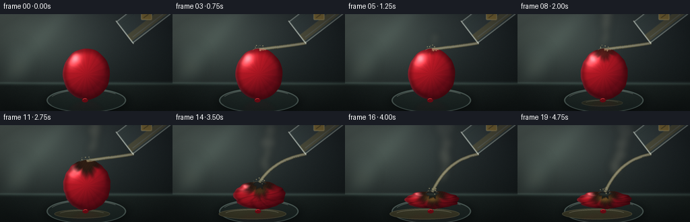
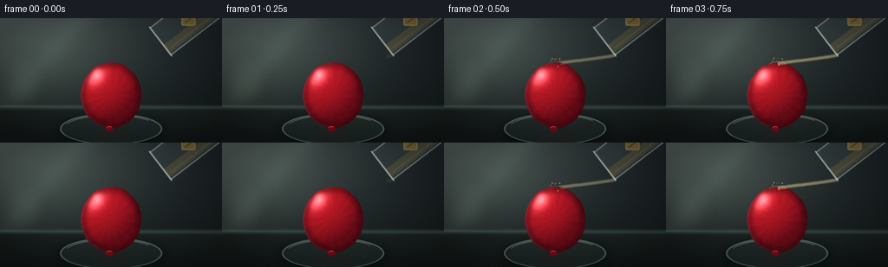
展开代码变化
--- 上一保存版本
+++ 本次保存版本
@@ -0,0 +1,555 @@
+"""Procedural renderer for a sulfuric-acid-on-rubber-balloon timelapse."""
+
+from __future__ import annotations
+
+import math
+from pathlib import Path
+
+import numpy as np
+from PIL import Image, ImageDraw, ImageFilter
+
+import artifact_io
+
+
+CASE_DIR = Path(__file__).resolve().parent
+W, H = 256, 144
+SS = 4
+RW, RH = W * SS, H * SS
+FPS = 4.0
+N_FRAMES = 20
+
+
+def clamp01(value):
+ return np.clip(value, 0.0, 1.0)
+
+
+def smoothstep(value, low, high):
+ x = clamp01((np.asarray(value, dtype=np.float32) - low) / (high - low))
+ return x * x * (3.0 - 2.0 * x)
+
+
+def lerp(a, b, amount):
+ return a + (b - a) * amount
+
+
+def rgba_image(width, height):
+ return Image.new("RGBA", (width, height), (0, 0, 0, 0))
+
+
+def make_background():
+ """Build a softly lit, shallow-depth lab bench."""
+ yy, xx = np.mgrid[0:RH, 0:RW].astype(np.float32)
+ x = xx / (RW - 1)
+ y = yy / (RH - 1)
+
+ top = np.stack(
+ [
+ lerp(68, 31, x),
+ lerp(78, 39, x),
+ lerp(78, 43, x),
+ ],
+ axis=-1,
+ )
+ lower = np.stack(
+ [
+ lerp(24, 18, x),
+ lerp(31, 24, x),
+ lerp(31, 24, x),
+ ],
+ axis=-1,
+ )
+ bg = top * (1.0 - y[..., None]) + lower * y[..., None]
+
+ # Soft window light from the upper left.
+ glow = np.exp(-(((x - 0.18) / 0.35) ** 2 + ((y - 0.18) / 0.45) ** 2))
+ bg += glow[..., None] * np.array([26, 31, 27], dtype=np.float32)
+ band = np.exp(-((x * 0.72 + y * 0.34 - 0.26) / 0.055) ** 2)
+ bg += band[..., None] * np.array([8, 10, 9], dtype=np.float32)
+
+ # Bench top with a darker front edge.
+ horizon = int(0.716 * RH)
+ table_y = np.maximum(yy - horizon, 0.0) / max(1.0, RH - horizon)
+ table = np.stack(
+ [
+ lerp(27, 17, table_y),
+ lerp(35, 23, table_y),
+ lerp(34, 23, table_y),
+ ],
+ axis=-1,
+ )
+ table += (0.5 + 0.5 * np.cos((x - 0.48) * 7.0))[..., None] * np.array(
+ [2.0, 3.0, 2.5], dtype=np.float32
+ )
+ bg[horizon:] = table[horizon:]
+
+ # A narrow reflected highlight where the bench meets the wall.
+ edge = np.exp(-((yy - horizon) / (2.2 * SS)) ** 2)
+ bg += edge[..., None] * np.array([24, 32, 30], dtype=np.float32)
+
+ # Fine surface grain, strongest in the foreground.
+ rng = np.random.default_rng(22)
+ grain = rng.normal(0.0, 2.0, (RH, RW, 1)).astype(np.float32)
+ grain *= (0.22 + 0.78 * y[..., None])
+ bg += grain
+
+ # Out-of-focus glassware gives the bench some depth without competing.
+ bg_img = Image.fromarray(np.uint8(clamp01(bg / 255.0) * 255.0), "RGB").convert("RGBA")
+ soft = rgba_image(RW, RH)
+ d = ImageDraw.Draw(soft)
+ bottle_box = (int(0.015 * RW), int(0.30 * RH), int(0.19 * RW), int(0.73 * RH))
+ d.rounded_rectangle(bottle_box, radius=18 * SS, fill=(117, 146, 145, 24), outline=(145, 173, 169, 30), width=2 * SS)
+ d.rectangle(
+ (int(0.065 * RW), int(0.245 * RH), int(0.115 * RW), int(0.39 * RH)),
+ fill=(109, 135, 134, 22),
+ outline=(145, 173, 169, 28),
+ width=2 * SS,
+ )
+ d.rectangle(
+ (int(0.055 * RW), int(0.49 * RH), int(0.145 * RW), int(0.59 * RH)),
+ fill=(193, 185, 145, 30),
+ )
+ soft = soft.filter(ImageFilter.GaussianBlur(9 * SS))
+ bg_img = Image.alpha_composite(bg_img, soft)
+ return bg_img
+
+
+def add_tray(base, t):
+ """Add a glass petri tray, spill, and soft contact shadow."""
+ layer = rgba_image(RW, RH)
+ d = ImageDraw.Draw(layer)
+ cx, cy = int(0.5 * RW), int(0.89 * RH)
+
+ shadow = rgba_image(RW, RH)
+ sd = ImageDraw.Draw(shadow)
+ sd.ellipse(
+ (cx - 62 * SS, cy - 14 * SS, cx + 62 * SS, cy + 18 * SS),
+ fill=(2, 7, 8, 150),
+ )
+ shadow = shadow.filter(ImageFilter.GaussianBlur(7 * SS))
+ layer = Image.alpha_composite(layer, shadow)
+
+ d = ImageDraw.Draw(layer)
+ d.ellipse(
+ (cx - 59 * SS, cy - 18 * SS, cx + 59 * SS, cy + 18 * SS),
+ fill=(86, 118, 113, 28),
+ outline=(169, 202, 195, 94),
+ width=2 * SS,
+ )
+ d.arc(
+ (cx - 55 * SS, cy - 16 * SS, cx + 55 * SS, cy + 16 * SS),
+ 202,
+ 322,
+ fill=(211, 231, 221, 84),
+ width=1 * SS,
+ )
+ d.arc(
+ (cx - 57 * SS, cy - 17 * SS, cx + 57 * SS, cy + 17 * SS),
+ 18,
+ 155,
+ fill=(39, 59, 57, 105),
+ width=2 * SS,
+ )
+
+ spill = smoothstep(t, 0.23, 0.83)
+ if spill > 0.01:
+ rxm = (24 + 28 * spill) * SS
+ rym = (4.2 + 4.0 * spill) * SS
+ px = cx - int(10 * SS * spill)
+ py = cy + int(4 * SS)
+ d.ellipse(
+ (px - rxm, py - rym, px + rxm, py + rym),
+ fill=(207, 176, 90, int(23 + 28 * spill)),
+ outline=(239, 221, 154, int(38 + 36 * spill)),
+ width=1 * SS,
+ )
+ d.arc(
+ (px - rxm * 0.82, py - rym * 0.82, px + rxm * 0.82, py + rym * 0.82),
+ 195,
+ 340,
+ fill=(255, 245, 196, int(50 + 45 * spill)),
+ width=1 * SS,
+ )
+
+ return Image.alpha_composite(base, layer)
+
+
+def balloon_state(t):
+ collapse = float(smoothstep(t, 0.56, 0.84))
+ char = float(smoothstep(t, 0.105, 0.61))
+ rupture = float(smoothstep(t, 0.56, 0.73))
+ cx = 128.0 + 1.2 * math.sin(1.3 * t)
+ cy = 89.0 + 22.0 * collapse
+ rx = 35.0 + 5.0 * collapse
+ ry = 38.0 - 25.0 * collapse
+ top_y = cy - ry
+ impact = (cx + 0.5 * math.sin(8.0 * t), top_y + 2.2)
+ return {
+ "collapse": collapse,
+ "char": char,
+ "rupture": rupture,
+ "cx": cx,
+ "cy": cy,
+ "rx": rx,
+ "ry": ry,
+ "top_y": top_y,
+ "impact": impact,
+ "base_y": 127.0,
+ }
+
+
+def render_balloon(t):
+ """Render a shaded, wrinkled ellipsoid with a growing charred contact spot."""
+ state = balloon_state(t)
+ yy, xx = np.mgrid[0:RH, 0:RW].astype(np.float32)
+ xf = xx / SS
+ yf = yy / SS
+
+ cx, cy = state["cx"], state["cy"]
+ rx, ry = state["rx"], state["ry"]
+ collapse, char = state["collapse"], state["char"]
+ impact_x, impact_y = state["impact"]
+
+ nx = (xf - cx) / rx
+ ny = (yf - cy) / ry
+ theta = np.arctan2(ny, nx)
+ radial = np.sqrt(nx * nx + ny * ny)
+
+ # Low-frequency ripples make the silhouette feel like soft rubber.
+ wobble = (
+ 1.0
+ + (0.006 + 0.024 * collapse) * np.sin(7.0 * theta + 0.9)
+ + (0.004 + 0.014 * collapse) * np.sin(12.0 * theta - 0.7)
+ + 0.008 * char * np.sin(18.0 * theta + 2.0 * radial)
+ )
+ radial_w = radial * wobble
+ mask = radial_w < 1.0
+
+ nz = np.sqrt(clamp01(1.0 - radial_w * radial_w))
+ lx, ly, lz = -0.48, -0.62, 0.62
+ light_len = math.sqrt(lx * lx + ly * ly + lz * lz)
+ diffuse = clamp01((nx * lx + ny * ly + nz * lz) / light_len)
+ rim = smoothstep(radial_w, 0.70, 1.0)
+
+ shadow = np.array([73.0, 7.0, 18.0], dtype=np.float32)
+ red = np.array([191.0, 27.0, 40.0], dtype=np.float32)
+ base = shadow + (red - shadow) * (0.24 + 0.80 * diffuse[..., None])
+ base *= (1.0 - 0.30 * rim[..., None])
+
+ # Fine longitudinal rubber striations and a cool rim light.
+ stripes = 0.026 * np.sin(15.0 * theta + 2.0 * radial) + 0.014 * np.sin(33.0 * theta)
+ base *= (1.0 + stripes[..., None])
+ rim_light = smoothstep(radial_w, 0.88, 1.0) * clamp01(0.25 - 0.85 * nx)
+ base += rim_light[..., None] * np.array([17.0, 19.0, 22.0], dtype=np.float32)
+
+ sx, sy, sz = -0.50, -0.58, 0.64
+ spec = clamp01(nx * sx + ny * sy + nz * sz)
+ spec = np.power(spec, 24.0) * 188.0
+ base += spec[..., None] * np.array([1.0, 0.72, 0.74], dtype=np.float32)
+
+ # Increasing wrinkles as the rubber softens and loses pressure.
+ phase = 8.2 * theta + 5.5 * radial + 0.9 * np.sin(4.0 * theta + 1.1)
+ folds = np.power(0.5 + 0.5 * np.sin(phase), 7.0) * collapse
+ cross_folds = np.power(0.5 + 0.5 * np.sin(13.0 * yf / max(ry, 2.0) + 5.0 * nx), 9.0) * collapse
+ base *= (1.0 - 0.22 * folds[..., None] - 0.12 * cross_folds[..., None])
+
+ # Irregular charred halo centered on the acid contact point.
+ dx = xf - impact_x
+ dy = yf - impact_y
+ distance = np.sqrt(dx * dx + dy * dy)
+ angle = np.arctan2(dy, dx)
+ ragged = (
+ 0.93
+ + 0.11 * np.sin(5.0 * angle + 0.8)
+ + 0.07 * np.sin(9.0 * angle - 1.7)
+ + 0.045 * np.sin(17.0 * angle + 0.2)
+ )
+ char_radius = 3.0 + 27.0 * char
+ char_strength = (1.0 - smoothstep(distance / ragged, char_radius * 0.42, char_radius)) * char
+ mottled = 0.5 + 0.5 * np.sin(1.7 * xf + 1.1 * yf) * np.sin(0.8 * xf - 2.2 * yf)
+ char_color = np.array([44.0, 27.0, 22.0], dtype=np.float32)
+ char_color = char_color * (0.48 + 0.42 * mottled[..., None])
+ base = base * (1.0 - char_strength[..., None]) + char_color * char_strength[..., None]
+
+ # Wet, glossy acid film in the center of the burn.
+ wet = (1.0 - smoothstep(distance, char_radius * 0.12, char_radius * 0.72)) * char
+ wet_glint = np.power(clamp01(0.25 + 0.75 * nz), 14.0) * wet
+ base += wet[..., None] * np.array([16.0, 12.0, 5.0], dtype=np.float32)
+ base += wet_glint[..., None] * np.array([94.0, 73.0, 27.0], dtype=np.float32)
+
+ # The puncture is a dark crater first, then a genuine hole.
+ hole_radius = 0.5 + 11.0 * state["rupture"]
+ hole_ragged = 0.88 + 0.15 * np.sin(7.0 * angle + 0.5) + 0.08 * np.sin(13.0 * angle)
+ hole = 1.0 - smoothstep(distance / hole_ragged, hole_radius * 0.55, hole_radius)
+ hole *= state["rupture"]
+ base = base * (1.0 - 0.80 * hole[..., None]) + np.array([6.0, 5.0, 5.0]) * (0.80 * hole[..., None])
+
+ # Premultiplied-style compositing is unnecessary here; save straight RGBA.
+ alpha = mask.astype(np.float32) * 255.0
+ alpha *= (1.0 - 0.68 * hole)
+ alpha *= smoothstep(yf, 128.8, 126.6)
+ alpha *= smoothstep(yf, 30.0, 43.0)
+ rgba = np.dstack([clamp01(base / 255.0) * 255.0, clamp01(alpha / 255.0) * 255.0])
+ return Image.fromarray(np.uint8(rgba), "RGBA")
+
+
+def add_balloon(base, t):
+ balloon = render_balloon(t)
+ state = balloon_state(t)
+
+ # Reflected red silhouette on the glass and bench.
+ reflection = balloon.transpose(Image.Transpose.FLIP_TOP_BOTTOM)
+ offset = int(2.0 * state["base_y"] * SS - (RH - 1))
+ ref_layer = rgba_image(RW, RH)
+ ref_layer.alpha_composite(reflection, (0, offset))
+ ref_arr = np.asarray(ref_layer).copy()
+ yy = np.arange(RH, dtype=np.float32)[:, None]
+ base_line = state["base_y"] * SS
+ fade = np.exp(-np.maximum(yy - base_line, 0.0) / (10.0 * SS))
+ fade *= (yy >= base_line - 1.0 * SS)
+ ref_arr[..., 3] = np.uint8(np.clip(ref_arr[..., 3].astype(np.float32) * fade * 0.18, 0, 255))
+ ref_layer = Image.fromarray(ref_arr, "RGBA").filter(ImageFilter.GaussianBlur(2.4 * SS))
+ out = Image.alpha_composite(base, ref_layer)
+ out = Image.alpha_composite(out, balloon)
+
+ # Small tied knot at the bottom of the balloon.
+ d = ImageDraw.Draw(out)
+ kx = int((state["cx"] - 1.5) * SS)
+ ky = int((state["base_y"] + 1.0) * SS)
+ d.ellipse((kx - 5 * SS, ky - 3 * SS, kx + 4 * SS, ky + 3 * SS), fill=(112, 12, 22, 255))
+ d.arc(
+ (kx - 4 * SS, ky - 3 * SS, kx + 3 * SS, ky + 2 * SS),
+ 195,
+ 320,
+ fill=(215, 53, 61, 150),
+ width=1 * SS,
+ )
+ return out
+
+
+def bezier(p0, p1, p2, p3, amount):
+ a = np.asarray(p0, dtype=np.float32)
+ b = np.asarray(p1, dtype=np.float32)
+ c = np.asarray(p2, dtype=np.float32)
+ d = np.asarray(p3, dtype=np.float32)
+ u = np.asarray(amount, dtype=np.float32)[..., None]
+ return (
+ (1.0 - u) ** 3 * a
+ + 3.0 * (1.0 - u) ** 2 * u * b
+ + 3.0 * (1.0 - u) * u ** 2 * c
+ + u ** 3 * d
+ )
+
+
+def add_stream_and_splash(base, t):
+ state = balloon_state(t)
+ pour = float(smoothstep(t, 0.025, 0.14))
+ if pour <= 0.0:
+ return base
+
+ impact = np.array(state["impact"], dtype=np.float32)
+ start = np.array([198.5, 42.8], dtype=np.float32)
+ bend = 0.5 + 0.5 * state["collapse"]
+ c1 = np.array([184.0, 45.0 + 1.5 * bend], dtype=np.float32)
+ c2 = np.array([151.0, 47.0 + 5.0 * bend], dtype=np.float32)
+ end = impact + np.array([0.0, -0.5], dtype=np.float32)
+
+ stream = rgba_image(RW, RH)
+ d = ImageDraw.Draw(stream)
+ length = min(1.0, pour * 1.16)
+ ts = np.linspace(0.0, length, 110)
+ pts = bezier(start, c1, c2, end, ts) * SS
+
+ # Wider translucent sheath, then a bright moving core.
+ d.line([tuple(p) for p in pts], fill=(224, 202, 123, int(74 * pour)), width=5 * SS, joint="curve")
+ d.line([tuple(p) for p in pts], fill=(245, 230, 166, int(104 * pour)), width=3 * SS, joint="curve")
+ d.line(
+ [tuple(p) for p in pts],
+ fill=(255, 247, 207, int(118 * pour)),
+ width=1 * SS,
+ joint="curve",
+ )
+
+ # Moving highlights and bubbles make the liquid read as flowing.
+ for index in range(9):
+ phase = (index / 9.0 + 1.75 * t) % 1.0
+ if phase > length:
+ continue
+ point = bezier(start, c1, c2, end, np.array([phase]))[0] * SS
+ wobble = math.sin(13.0 * t + index * 1.9)
+ radius = (0.55 + 0.45 * abs(wobble)) * SS
+ d.ellipse(
+ (point[0] - radius, point[1] - radius, point[0] + radius, point[1] + radius),
+ fill=(255, 252, 224, int(105 * pour)),
+ )
+
+ if t > 0.09:
+ # A few fine droplets around the contact zone.
+ for index in range(8):
+ angle = -2.85 + index * 0.55 + 0.22 * math.sin(7.0 * t + index)
+ life = (0.35 + 0.65 * ((index * 0.37 + 2.7 * t) % 1.0))
+ radius = (3.0 + 5.5 * life) * SS
+ px = impact[0] * SS + math.cos(angle) * radius
+ py = impact[1] * SS + math.sin(angle) * radius * 0.65 - 2.2 * SS
+ drop = (0.45 + 0.55 * abs(math.sin(4.1 * t + index))) * SS
+ d.ellipse((px - drop, py - drop, px + drop, py + drop), fill=(255, 242, 183, 118))
+
+ # Thin splash crown at the moment of contact.
+ crown = float(smoothstep(t, 0.08, 0.15)) * (1.0 - 0.55 * float(smoothstep(t, 0.22, 0.55)))
+ if crown > 0.0:
+ d.arc(
+ (
+ int((impact[0] - 10) * SS),
+ int((impact[1] - 3) * SS),
+ int((impact[0] + 10) * SS),
+ int((impact[1] + 6) * SS),
+ ),
+ 192,
+ 348,
+ fill=(255, 245, 192, int(126 * crown)),
+ width=1 * SS,
+ )
+
+ stream = stream.filter(ImageFilter.GaussianBlur(0.35 * SS))
+ return Image.alpha_composite(base, stream)
+
+
+def add_beaker(base, t):
+ """Tilted clear beaker, cropped at the top-right edge of the frame."""
+ layer = rgba_image(RW, RH)
+ d = ImageDraw.Draw(layer)
+
+ mouth = np.array([185.0, 27.0], dtype=np.float32)
+ direction = np.array([0.79, -0.61], dtype=np.float32)
+ perpendicular = np.array([0.61, 0.79], dtype=np.float32)
+ length = 72.0
+ radius = 20.0
+ end = mouth + direction * length
+
+ outer = [
+ tuple((mouth - perpendicular * radius) * SS),
+ tuple((end - perpendicular * radius) * SS),
+ tuple((end + perpendicular * radius) * SS),
+ tuple((mouth + perpendicular * radius) * SS),
+ ]
+ d.polygon(outer, fill=(177, 213, 211, 23), outline=(208, 232, 226, 112))
+ d.line(outer + [outer[0]], fill=(218, 237, 231, 126), width=2 * SS, joint="curve")
+
+ # Interior liquid is a pale amber band along the lower wall.
+ liquid = [
+ tuple((mouth + perpendicular * 17.0) * SS),
+ tuple((end + perpendicular * 17.0) * SS),
+ tuple((end + perpendicular * 5.5) * SS),
+ tuple((mouth + perpendicular * 5.5) * SS),
+ ]
+ d.polygon(liquid, fill=(224, 201, 117, 56))
+
+ # A luminous lip and a couple of glass reflections.
+ lip_axis = perpendicular * 22.0
+ p1 = (mouth - lip_axis) * SS
+ p2 = (mouth + lip_axis) * SS
+ d.line([tuple(p1), tuple(p2)], fill=(232, 247, 241, 184), width=2 * SS)
+ d.line(
+ [tuple((mouth + direction * 5.0 + perpendicular * 13.0) * SS), tuple((end + perpendicular * 13.0) * SS)],
+ fill=(241, 251, 246, 70),
+ width=1 * SS,
+ )
+ d.line(
+ [tuple((mouth + direction * 4.0 - perpendicular * 13.0) * SS), tuple((end - perpendicular * 13.0) * SS)],
+ fill=(49, 82, 82, 55),
+ width=1 * SS,
+ )
+
+ # A small hazard-orange label, enough to identify the reagent without readable text.
+ label_center = mouth + direction * 40.0 + perpendicular * 1.0
+ for corner in np.array([[-1, -1], [1, -1], [1, 1], [-1, 1]], dtype=np.float32):
+ pass
+ lx, ly = label_center * SS
+ d.rounded_rectangle(
+ (lx - 8 * SS, ly - 5 * SS, lx + 8 * SS, ly + 5 * SS),
+ radius=1.5 * SS,
+ fill=(218, 173, 70, 125),
+ outline=(242, 215, 140, 150),
+ width=1 * SS,
+ )
+ d.line(
+ [(lx - 4 * SS, ly + 2 * SS), (lx + 3 * SS, ly - 3 * SS)],
+ fill=(63, 54, 32, 170),
+ width=1 * SS,
+ )
+
+ layer = layer.filter(ImageFilter.GaussianBlur(0.45 * SS))
+ return Image.alpha_composite(base, layer)
+
+
+def add_smoke(base, t):
+ state = balloon_state(t)
+ impact_x, impact_y = state["impact"]
+ layer = rgba_image(RW, RH)
+ d = ImageDraw.Draw(layer)
+
+ for index in range(18):
+ birth = 0.12 + index * 0.041
+ age = t - birth
+ lifetime = 0.46 + 0.08 * (index % 4)
+ if age <= 0.0 or age >= lifetime:
+ continue
+ progress = age / lifetime
+ envelope = math.sin(math.pi * progress) ** 0.8
+ rise = (12.0 + 18.0 * progress) * age * 9.0
+ drift = (4.0 + 0.7 * index) * age * 6.0 + 4.5 * math.sin(9.0 * age + index)
+ px = (impact_x - 1.0 + (index % 5 - 2) * 1.3 + drift) * SS
+ py = (impact_y - rise + 2.0 * math.cos(6.0 * age + index * 1.2)) * SS
+ radius = (2.4 + 12.5 * progress + 1.5 * (index % 3)) * SS
+ alpha = int(56 * envelope)
+ warm = int(18 * (1.0 - progress))
+ color = (164 + warm, 163 + warm, 151, alpha)
+ d.ellipse((px - radius, py - radius * 0.72, px + radius, py + radius * 0.72), fill=color)
+
+ layer = layer.filter(ImageFilter.GaussianBlur(5.0 * SS))
+ return Image.alpha_composite(base, layer)
+
+
+def grade_and_finish(image, frame_index):
+ arr = np.asarray(image.convert("RGB"), dtype=np.float32) / 255.0
+ yy, xx = np.mgrid[0:RH, 0:RW].astype(np.float32)
+ nx = (xx / (RW - 1) - 0.5) * 2.0
+ ny = (yy / (RH - 1) - 0.5) * 2.0
+ radius2 = nx * nx + ny * ny
+ vignette = np.clip(1.0 - 0.20 * radius2, 0.70, 1.0)
+ arr *= vignette[..., None]
+
+ # Warm the highlights and cool the shadows slightly.
+ luminance = arr @ np.array([0.2126, 0.7152, 0.0722], dtype=np.float32)
+ arr += (luminance[..., None] ** 2) * np.array([0.025, 0.015, -0.008], dtype=np.float32)
+ arr *= np.array([1.01, 0.995, 0.985], dtype=np.float32)
+
+ rng = np.random.default_rng(1000 + frame_index)
+ arr += rng.normal(0.0, 0.0045, (RH, RW, 1)).astype(np.float32)
+ arr = np.clip(arr, 0.0, 1.0)
+
+ small = Image.fromarray(np.uint8(arr * 255.0), "RGB").resize((W, H), Image.Resampling.LANCZOS)
+ return np.asarray(small, dtype=np.uint8)
+
+
+def generate_frames():
+ background = make_background()
+ frames = []
+ for index in range(N_FRAMES):
+ t = index / (N_FRAMES - 1)
+ scene = add_tray(background.copy(), t)
+ scene = add_balloon(scene, t)
+ scene = add_smoke(scene, t)
+ scene = add_stream_and_splash(scene, t)
+ scene = add_beaker(scene, t)
+ frames.append(grade_and_finish(scene, index))
+ return np.stack(frames)
+
+
+def main():
+ frames = generate_frames()
+ artifact_io.save(frames, CASE_DIR)
+ print(f"Wrote {len(frames)} frames to {CASE_DIR}")
+
+
+if __name__ == "__main__":
+ main()
候选 02播放与检查图
点击播放 · 原生 RGB 像素
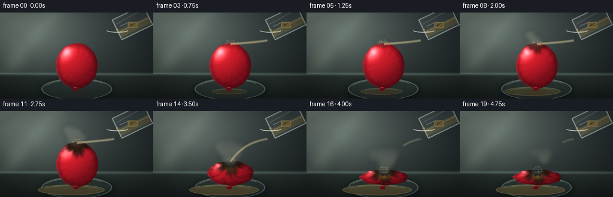
展开代码变化
--- 上一保存版本
+++ 本次保存版本
@@ -44,17 +44,17 @@
top = np.stack(
[
- lerp(68, 31, x),
- lerp(78, 39, x),
- lerp(78, 43, x),
+ lerp(98, 45, x),
+ lerp(111, 54, x),
+ lerp(108, 58, x),
],
axis=-1,
)
lower = np.stack(
[
- lerp(24, 18, x),
- lerp(31, 24, x),
- lerp(31, 24, x),
+ lerp(39, 27, x),
+ lerp(48, 34, x),
+ lerp(47, 34, x),
],
axis=-1,
)
@@ -62,18 +62,18 @@
# Soft window light from the upper left.
glow = np.exp(-(((x - 0.18) / 0.35) ** 2 + ((y - 0.18) / 0.45) ** 2))
- bg += glow[..., None] * np.array([26, 31, 27], dtype=np.float32)
+ bg += glow[..., None] * np.array([34, 40, 35], dtype=np.float32)
band = np.exp(-((x * 0.72 + y * 0.34 - 0.26) / 0.055) ** 2)
- bg += band[..., None] * np.array([8, 10, 9], dtype=np.float32)
+ bg += band[..., None] * np.array([11, 13, 11], dtype=np.float32)
# Bench top with a darker front edge.
horizon = int(0.716 * RH)
table_y = np.maximum(yy - horizon, 0.0) / max(1.0, RH - horizon)
table = np.stack(
[
- lerp(27, 17, table_y),
- lerp(35, 23, table_y),
- lerp(34, 23, table_y),
+ lerp(41, 25, table_y),
+ lerp(51, 33, table_y),
+ lerp(49, 32, table_y),
],
axis=-1,
)
@@ -84,7 +84,7 @@
# A narrow reflected highlight where the bench meets the wall.
edge = np.exp(-((yy - horizon) / (2.2 * SS)) ** 2)
- bg += edge[..., None] * np.array([24, 32, 30], dtype=np.float32)
+ bg += edge[..., None] * np.array([33, 42, 39], dtype=np.float32)
# Fine surface grain, strongest in the foreground.
rng = np.random.default_rng(22)
@@ -150,16 +150,16 @@
width=2 * SS,
)
- spill = smoothstep(t, 0.23, 0.83)
+ spill = smoothstep(t, 0.05, 0.68)
if spill > 0.01:
- rxm = (24 + 28 * spill) * SS
- rym = (4.2 + 4.0 * spill) * SS
+ rxm = (27 + 31 * spill) * SS
+ rym = (4.5 + 4.5 * spill) * SS
px = cx - int(10 * SS * spill)
py = cy + int(4 * SS)
d.ellipse(
(px - rxm, py - rym, px + rxm, py + rym),
- fill=(207, 176, 90, int(23 + 28 * spill)),
- outline=(239, 221, 154, int(38 + 36 * spill)),
+ fill=(207, 176, 90, int(33 + 36 * spill)),
+ outline=(239, 221, 154, int(54 + 48 * spill)),
width=1 * SS,
)
d.arc(
@@ -230,20 +230,20 @@
diffuse = clamp01((nx * lx + ny * ly + nz * lz) / light_len)
rim = smoothstep(radial_w, 0.70, 1.0)
- shadow = np.array([73.0, 7.0, 18.0], dtype=np.float32)
- red = np.array([191.0, 27.0, 40.0], dtype=np.float32)
- base = shadow + (red - shadow) * (0.24 + 0.80 * diffuse[..., None])
+ shadow = np.array([90.0, 9.0, 21.0], dtype=np.float32)
+ red = np.array([211.0, 31.0, 45.0], dtype=np.float32)
+ base = shadow + (red - shadow) * (0.30 + 0.82 * diffuse[..., None])
base *= (1.0 - 0.30 * rim[..., None])
# Fine longitudinal rubber striations and a cool rim light.
stripes = 0.026 * np.sin(15.0 * theta + 2.0 * radial) + 0.014 * np.sin(33.0 * theta)
base *= (1.0 + stripes[..., None])
- rim_light = smoothstep(radial_w, 0.88, 1.0) * clamp01(0.25 - 0.85 * nx)
- base += rim_light[..., None] * np.array([17.0, 19.0, 22.0], dtype=np.float32)
+ rim_light = smoothstep(radial_w, 0.86, 1.0) * clamp01(0.25 - 0.85 * nx)
+ base += rim_light[..., None] * np.array([25.0, 27.0, 30.0], dtype=np.float32)
sx, sy, sz = -0.50, -0.58, 0.64
spec = clamp01(nx * sx + ny * sy + nz * sz)
- spec = np.power(spec, 24.0) * 188.0
+ spec = np.power(spec, 22.0) * 220.0
base += spec[..., None] * np.array([1.0, 0.72, 0.74], dtype=np.float32)
# Increasing wrinkles as the rubber softens and loses pressure.
@@ -343,14 +343,15 @@
def add_stream_and_splash(base, t):
state = balloon_state(t)
pour = float(smoothstep(t, 0.025, 0.14))
+ pour *= 1.0 - 0.68 * float(smoothstep(t, 0.67, 0.91))
if pour <= 0.0:
return base
impact = np.array(state["impact"], dtype=np.float32)
- start = np.array([198.5, 42.8], dtype=np.float32)
+ start = np.array([190.8, 46.8], dtype=np.float32)
bend = 0.5 + 0.5 * state["collapse"]
- c1 = np.array([184.0, 45.0 + 1.5 * bend], dtype=np.float32)
- c2 = np.array([151.0, 47.0 + 5.0 * bend], dtype=np.float32)
+ c1 = np.array([179.0, 48.0 + 1.5 * bend], dtype=np.float32)
+ c2 = np.array([150.0, 49.0 + 5.0 * bend], dtype=np.float32)
end = impact + np.array([0.0, -0.5], dtype=np.float32)
stream = rgba_image(RW, RH)
@@ -414,70 +415,101 @@
def add_beaker(base, t):
- """Tilted clear beaker, cropped at the top-right edge of the frame."""
+ """A tilted, partly cropped glass beaker with a clearly defined lip."""
layer = rgba_image(RW, RH)
d = ImageDraw.Draw(layer)
- mouth = np.array([185.0, 27.0], dtype=np.float32)
- direction = np.array([0.79, -0.61], dtype=np.float32)
- perpendicular = np.array([0.61, 0.79], dtype=np.float32)
- length = 72.0
- radius = 20.0
- end = mouth + direction * length
-
- outer = [
- tuple((mouth - perpendicular * radius) * SS),
- tuple((end - perpendicular * radius) * SS),
- tuple((end + perpendicular * radius) * SS),
- tuple((mouth + perpendicular * radius) * SS),
+ # The vessel occupies the upper-right corner; only the pouring end enters frame.
+ mouth = np.array([195.5, 29.0], dtype=np.float32)
+ back = np.array([247.0, 4.0], dtype=np.float32)
+ axis = back - mouth
+ axis /= np.linalg.norm(axis)
+ perp = np.array([-axis[1], axis[0]], dtype=np.float32)
+ half_width = 18.5
+
+ body = [
+ tuple((mouth - perp * half_width) * SS),
+ tuple((back - perp * half_width) * SS),
+ tuple((back + perp * half_width) * SS),
+ tuple((mouth + perp * half_width) * SS),
]
- d.polygon(outer, fill=(177, 213, 211, 23), outline=(208, 232, 226, 112))
- d.line(outer + [outer[0]], fill=(218, 237, 231, 126), width=2 * SS, joint="curve")
-
- # Interior liquid is a pale amber band along the lower wall.
- liquid = [
- tuple((mouth + perpendicular * 17.0) * SS),
- tuple((end + perpendicular * 17.0) * SS),
- tuple((end + perpendicular * 5.5) * SS),
- tuple((mouth + perpendicular * 5.5) * SS),
+ d.polygon(body, fill=(177, 212, 208, 24))
+
+ # Amber acid inside the lower half of the tilted vessel.
+ inner = [
+ tuple((mouth + perp * 2.0) * SS),
+ tuple((back + perp * 2.0) * SS),
+ tuple((back + perp * 14.5) * SS),
+ tuple((mouth + perp * 14.5) * SS),
]
- d.polygon(liquid, fill=(224, 201, 117, 56))
-
- # A luminous lip and a couple of glass reflections.
- lip_axis = perpendicular * 22.0
- p1 = (mouth - lip_axis) * SS
- p2 = (mouth + lip_axis) * SS
- d.line([tuple(p1), tuple(p2)], fill=(232, 247, 241, 184), width=2 * SS)
+ d.polygon(inner, fill=(226, 200, 104, 68))
+ surface_a = (mouth + perp * 4.8 + axis * 3.0) * SS
+ surface_b = (back + perp * 4.8) * SS
+ d.line([tuple(surface_a), tuple(surface_b)], fill=(255, 233, 154, 142), width=1 * SS)
+
+ # Thick borosilicate edges with a darker inner return.
+ d.line(body + [body[0]], fill=(223, 241, 234, 156), width=2 * SS, joint="curve")
d.line(
- [tuple((mouth + direction * 5.0 + perpendicular * 13.0) * SS), tuple((end + perpendicular * 13.0) * SS)],
- fill=(241, 251, 246, 70),
+ [tuple((mouth + perp * (half_width - 2.2)) * SS), tuple((back + perp * (half_width - 2.2)) * SS)],
+ fill=(40, 72, 70, 120),
width=1 * SS,
)
d.line(
- [tuple((mouth + direction * 4.0 - perpendicular * 13.0) * SS), tuple((end - perpendicular * 13.0) * SS)],
- fill=(49, 82, 82, 55),
- width=1 * SS,
- )
-
- # A small hazard-orange label, enough to identify the reagent without readable text.
- label_center = mouth + direction * 40.0 + perpendicular * 1.0
- for corner in np.array([[-1, -1], [1, -1], [1, 1], [-1, 1]], dtype=np.float32):
- pass
- lx, ly = label_center * SS
+ [tuple((mouth - perp * 9.0 + axis * 4.0) * SS), tuple((back - perp * 12.5) * SS)],
+ fill=(247, 252, 241, 92),
+ width=1 * SS,
+ )
+ d.line(
+ [tuple((mouth - perp * 3.0 + axis * 7.0) * SS), tuple((mouth - perp * 3.0 + axis * 24.0) * SS)],
+ fill=(255, 255, 249, 142),
+ width=1 * SS,
+ )
+
+ # A rounded pouring lip helps the thin stream feel connected to the glass.
+ lip_center = mouth + perp * 1.0
+ d.arc(
+ (
+ int((lip_center[0] - 18.5) * SS),
+ int((lip_center[1] - 4.0) * SS),
+ int((lip_center[0] + 18.5) * SS),
+ int((lip_center[1] + 4.0) * SS),
+ ),
+ 6,
+ 174,
+ fill=(245, 252, 246, 205),
+ width=2 * SS,
+ )
+ d.ellipse(
+ (
+ int((mouth[0] - 2.0) * SS),
+ int((mouth[1] - 1.8) * SS),
+ int((mouth[0] + 2.0) * SS),
+ int((mouth[1] + 1.8) * SS),
+ ),
+ fill=(244, 227, 155, 155),
+ )
+
+ # Reagent label and a soft reflected gleam.
+ lx, ly = (mouth + axis * 27.0 + perp * 4.0) * SS
d.rounded_rectangle(
(lx - 8 * SS, ly - 5 * SS, lx + 8 * SS, ly + 5 * SS),
radius=1.5 * SS,
- fill=(218, 173, 70, 125),
- outline=(242, 215, 140, 150),
+ fill=(213, 168, 66, 120),
+ outline=(244, 217, 143, 146),
width=1 * SS,
)
d.line(
[(lx - 4 * SS, ly + 2 * SS), (lx + 3 * SS, ly - 3 * SS)],
- fill=(63, 54, 32, 170),
- width=1 * SS,
- )
-
- layer = layer.filter(ImageFilter.GaussianBlur(0.45 * SS))
+ fill=(61, 52, 31, 176),
+ width=1 * SS,
+ )
+ d.line(
+ [(lx - 4 * SS, ly + 2 * SS), (lx - 1 * SS, ly - 2 * SS)],
+ fill=(61, 52, 31, 176),
+ width=1 * SS,
+ )
+
+ layer = layer.filter(ImageFilter.GaussianBlur(0.35 * SS))
return Image.alpha_composite(base, layer)
@@ -487,25 +519,45 @@
layer = rgba_image(RW, RH)
d = ImageDraw.Draw(layer)
- for index in range(18):
- birth = 0.12 + index * 0.041
+ # Three buoyant ribbons rise from the burn and drift toward the left.
+ for ribbon in range(3):
+ for index in range(7):
+ birth = 0.15 + ribbon * 0.09 + index * 0.052
+ age = t - birth
+ lifetime = 0.42 + 0.06 * ((index + ribbon) % 3)
+ if age <= 0.0 or age >= lifetime:
+ continue
+ progress = age / lifetime
+ envelope = math.sin(math.pi * progress) ** 0.75
+ rise = (8.0 + 22.0 * progress) * progress + 6.0 * age
+ drift = (ribbon - 1) * (5.0 + 12.0 * progress) + 2.0 * math.sin(7.0 * age + ribbon)
+ px = (impact_x + drift) * SS
+ py = (impact_y - rise) * SS
+ radius = (3.4 + 10.5 * progress) * SS
+ alpha = int(65 * envelope)
+ d.ellipse(
+ (px - radius, py - radius * 0.78, px + radius, py + radius * 0.70),
+ fill=(179, 178, 164, alpha),
+ )
+
+ # A brief, denser puff hides the initial puncture and gives the burn volume.
+ for index in range(12):
+ birth = 0.11 + index * 0.043
age = t - birth
- lifetime = 0.46 + 0.08 * (index % 4)
+ lifetime = 0.27 + 0.07 * (index % 3)
if age <= 0.0 or age >= lifetime:
continue
progress = age / lifetime
- envelope = math.sin(math.pi * progress) ** 0.8
- rise = (12.0 + 18.0 * progress) * age * 9.0
- drift = (4.0 + 0.7 * index) * age * 6.0 + 4.5 * math.sin(9.0 * age + index)
- px = (impact_x - 1.0 + (index % 5 - 2) * 1.3 + drift) * SS
- py = (impact_y - rise + 2.0 * math.cos(6.0 * age + index * 1.2)) * SS
- radius = (2.4 + 12.5 * progress + 1.5 * (index % 3)) * SS
- alpha = int(56 * envelope)
- warm = int(18 * (1.0 - progress))
- color = (164 + warm, 163 + warm, 151, alpha)
+ envelope = math.sin(math.pi * progress) ** 0.6
+ angle = index * 2.4
+ px = (impact_x - 2.0 + (index % 4 - 1.5) * 2.0 + 6.0 * age * math.cos(angle)) * SS
+ py = (impact_y - 4.0 * age - 3.0 * progress + 1.4 * math.sin(angle)) * SS
+ radius = (2.8 + 9.0 * progress) * SS
+ alpha = int(75 * envelope)
+ color = (191, 187, 170, alpha)
d.ellipse((px - radius, py - radius * 0.72, px + radius, py + radius * 0.72), fill=color)
- layer = layer.filter(ImageFilter.GaussianBlur(5.0 * SS))
+ layer = layer.filter(ImageFilter.GaussianBlur(4.0 * SS))
return Image.alpha_composite(base, layer)
可观测工具轨迹
实际执行的命令与返回图片。
命令 1exit 0
/bin/bash -c "pwd && rg --files -g 'prompt.txt' -g 'GENERATION_RULES.md' -g 'task_spec.json' -g '"'!**/.git/**'"'"
命令 2exit 0
/bin/bash -c 'ls -la && find . -maxdepth 2 -type f | sort | head -200'
命令 3exit 0
/bin/bash -c "sed -n '1,240p' GENERATION_RULES.md"
命令 4exit 0
/bin/bash -c "cat prompt.txt && printf '\\n--- task_spec ---\\n' && cat task_spec.json"
命令 5exit 0
/bin/bash -c "sed -n '1,260p' artifact_io.py"
命令 6exit 0
/bin/bash -c 'python generate.py'
命令 7exit 0
/bin/bash -c 'python generate.py'
命令 8exit 0
/bin/bash -c 'du -h generate.py frames pixels.npz index.html inspection.png transition_check.png 2>/dev/null | sort -h | tail -20 && wc -l generate.py'
命令 9exit 0
/bin/bash -c "python -m py_compile generate.py && python - <<'PY'
import json
import numpy as np
from pathlib import Path
from PIL import Image
root = Path('.')
spec = json.loads((root / 'task_spec.json').read_text())
frames = sorted((root / 'frames').glob('*.png'))
first = np.asarray(Image.open(frames[0]))
last = np.asarray(Image.open(frames[-1]))
pixels = np.load(root / 'pixels.npz')['pixels']
print('spec', spec)
print('frame_files', len(frames), 'first_last', frames[0].name, frames[-1].name)
print('image_shape', first.shape, 'mode', Image.open(frames[0]).mode)
print('pixel_tensor', pixels.shape, pixels.dtype, 'changed_frames', int(np.any(pixels[:, :, 1:] "'!= pixels[:, :, :-1], axis=(0, 1)).sum()))
print('"'mean_rgb_first', first.mean(axis=(0,1)).round(1).tolist())
print('mean_rgb_last', last.mean(axis=(0,1)).round(1).tolist())
print('artifacts', [p.name for p in sorted(root.iterdir()) if p.is_file()])
PY"命令 10exit 0
/bin/bash -c 'git status --short 2>/dev/null || true'
视觉工具实际返回图片 1

视觉工具实际返回图片 2
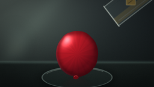
视觉工具实际返回图片 3
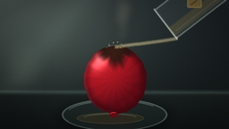
视觉工具实际返回图片 4
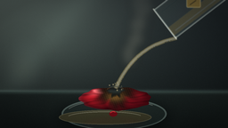
视觉工具实际返回图片 5

视觉工具实际返回图片 6
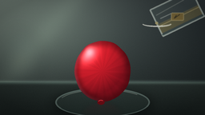
视觉工具实际返回图片 7
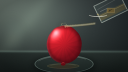
视觉工具实际返回图片 8
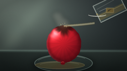
视觉工具实际返回图片 9
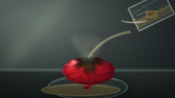
视觉工具实际返回图片 10
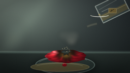
视觉工具实际返回图片 11
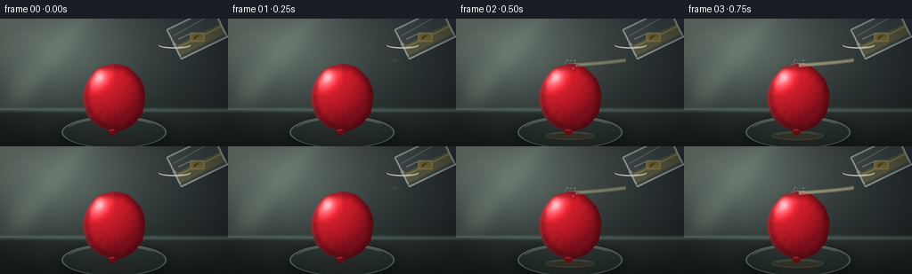
保存候选 2 份；完成命令 10 次；可验证图片返回 11 张。原始 API 响应与完整日志保留在本地。